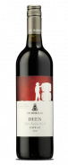
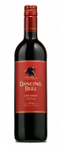
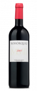
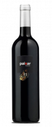
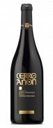
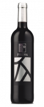

Solo Vino Club
Aurus 2000
Tinto con crianza | Finca Allende | D.O.Ca. Rioja
Sólo Miguel Ángel de Gregorio podía crear este vino. Osado y revolucionario.
Dancing Bull Zinfandel 2014
Vino Tinto | Dancing Bull Wines | California
La variedad zinfandel resulta una auténtica embajadora de los vinos americanos.
Bohórquez Tinto Reserva 2007
Tinto Reserva | Bodegas Bohórquez | D.O. Ribera del Duero
Javier Bohórquez aterrizó en Ribera del Duero desde Jerez con el objetivo de elaborar vinos de la máxima calidad.
Paixar 2015
Vino Tinto | Bodegas y Viñedos Paixar | D.O. Bierzo
Procedente de la Excelente cosecha 2015, les presentamos uno de los tintos más deseados y exclusivos de la D.O.
Cerro Añón Reserva 2013
Tinto Reserva | Bodegas Olarra | D.O.Ca. Rioja
Desde sus inicios, Bodegas Olarra, sita a las afueras de Logroño, se ha caracterizado por su excelente calidad.
Piedra Platino 2014
Vino Tinto | D.O. Toro
Piedra Platino 2014 es uno de los vinos de Toro más aclamados por la crítica nacional e internacional.